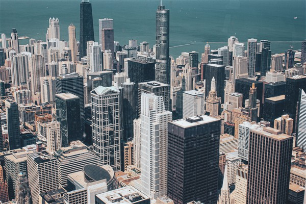
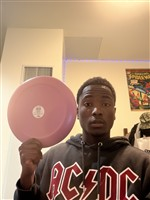

This page explores how images work on the web. Using two photos, one large professional photo from Pexels and one I took myself, I compare file formats (JPG, GIF, PNG), color modes (full color, greyscale, black and white), file sizes, and what happens when an image is resized properly in an editor versus stretched or enlarged with CSS.
Demonstrating Image Manipulation with a Chicago Skyline Photo from Pexels
I picked this photo because the buildings give lots of fine detail, which makes quality loss easy to see. It was taken by Pawel (aparatem_go on Pexels), a photographer based in Lublin, Poland, whose profile describes his work as "Trying to Make Simple Things Unusually..." and whose photos have drawn about 3.3 million views. The photo is 5075 x 3383 pixels, a 3.07 MB JPG, and shows a dense group of downtown Chicago skyscrapers beside a blue-green lake. Source: the photo's Pexels page.

The Chicago skyline photo, reduced to 600 x 400 pixels for this page.
Original Image
Click to open the image in its original JPG format, or as a GIF, greyscale, or black and white version (each opens in a new tab):
The full 3.07 MB original, shrunk to 600 pixels wide with CSS. It looks fine, but the browser still downloads every byte of the large file.
Proper Reduction of Image with Editor
The same photo resized to 600 x 400 in an editor. It looks just as sharp, and the file is only about 106 KB.
Improper image proportions with CSS
Height kept at 400, width cut by 33% (402 px): the buildings look squeezed.Width cut by another 33% (269 px): even thinner.Width kept at 600, height cut by 33% (268 px): the buildings look flattened.Height cut by another 33% (180 px): flatter still.
Improper Enlarging with CSS
The 600 x 400 file displayed at 600 pixels wide: sharp.The 150 x 100 file (25% of the size) stretched to 600 pixels wide with the same CSS: blurry and pixelated.
Demonstrating Image Proportions with a Plate Next to My Head
I took this photo myself with my phone: a perfectly round plate held next to my face. A circle is a good test because any stretching shows right away. The photo is 2316 x 3088 pixels, a 1.2 MB JPG, and it is portrait (taller than wide), which makes squashing mistakes easy to spot.
Me holding a round plate beside my face, reduced to 600 x 800 pixels.
Original Image
Click to open the image in its original JPG format, or as a GIF, greyscale, or black and white version (each opens in a new tab):
The full 1.2 MB original, shrunk to 300 pixels wide with CSS. It keeps its proportions, but the browser still downloads the whole file.
Proper Reduction of Image with Editor
The same photo resized to 600 x 800 in an editor. The plate is still a true circle, and the file is only about 83 KB.
Improper image proportions with CSS
Height kept at 800, width cut by 33% (402 px): the plate turns into a tall oval.Width cut by another 33% (269 px): an even narrower oval.Width kept at 600, height cut by 33% (536 px): the plate turns into a wide oval.Height cut by another 33% (359 px): flattened even more.
Improper Enlarging with CSS
The 600 x 800 file displayed at 300 pixels wide: sharp.

The 150 x 200 file (25% of the size) stretched to 300 pixels wide with the same CSS: blurry and pixelated.